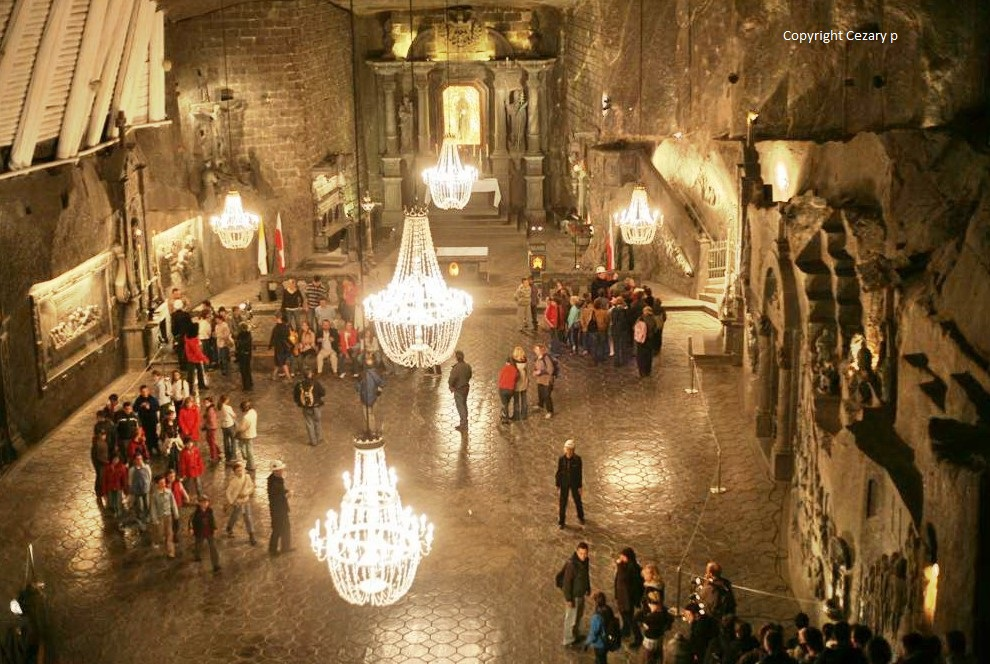

Europe's little known, interesting destinations (in my humble opinion)

The Wieliczka Salt Mine reaches a depth of 327 metres (1,073 ft),
and extends via horizontal passages and chambers for over 287 kilometres (178 miles).
The rock salt is naturally of varying shades of grey, resembling unpolished granite rather
than the white crystalline substance that might be expected.